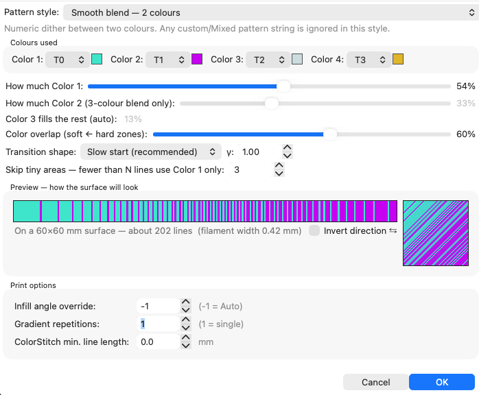
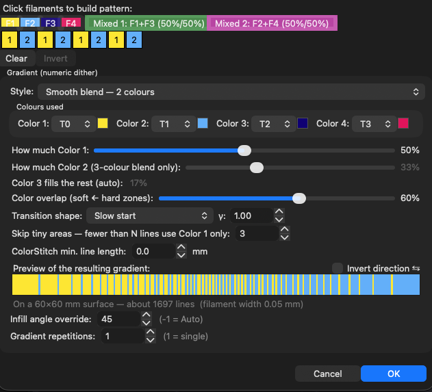
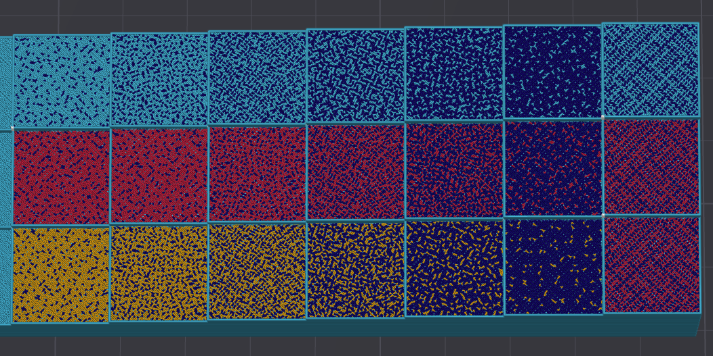
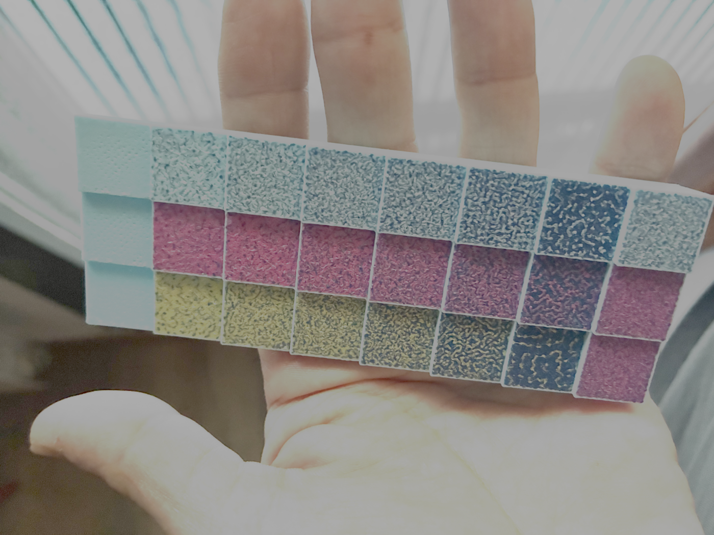

§1b · §1f — Colour
ColorStitch
One of the pass kinds in a Sandwich. It does exactly one job: for every fill line on the surface, it decides which filament prints that line. Everything you can build with it comes out of that one decision.
- no gate
- print-verified
- since 2.3
Where ColorStitch Painter›Pro›a pass set toColorStitch›ADV…
Up to 2.4.5 the same dialog also opened from the Sandwich editor's Edit gradient… button. The editor is gone in 2.4.6, so the Painter is the only way in now.
What breaks without it
A solid fill gives you one colour per surface. If you want a blend you have three bad options in a stock slicer: print two regions and live with the seam, buy a filament that is already the colour you wanted, or give up. None of them let you say "60% of this surface in blue, the rest in yellow, mixed finely enough that my eye stops resolving it".
Stock
One tool owns the whole top surface. Colour boundaries are geometry: you draw them, the slicer obeys them, and every one of them is visible.
With ColorStitch
Every fill line gets its own tool. At 0.42 mm line width a 60 mm surface has around 170 of them, which is plenty for the eye to integrate a ratio instead of counting stripes.
It is worth being clear about what this is not doing. Nothing gets mixed. There is no gradient in the material. There are just lines of one filament sitting next to lines of another, in a sequence chosen so that any local window has roughly the ratio you asked for. The blending happens in your eye, and it is the same trick a newspaper photograph plays.
The blend can only ever be as fine as the fill lines it is built from, so the top surface line width is the lever. Not the object-wide one: the top surface has its own. On a 0.4 mm nozzle the default lands around 0.42 mm and you can still count the lines on a finished part; coming down to about 0.30 mm is where two colours stop reading as stripes and the surface still prints cleanly. Lower does get finer, and the overlap between neighbouring lines stops being controllable, which costs you the finish. Reported from real prints rather than calculated.
Pattern styles
Pattern style picks where the sequence comes from. Only one is active at a time, on purpose: a hand-typed string, a MixedFilament recipe, a weave, a blend and a set of stripes cannot all drive the same pass. A line under the selector always tells you what the active style is doing, and it turns amber when that style overrides everything else.
| Style | What it produces |
|---|---|
| Custom pattern | Click filament buttons to build a digit string by hand; the slicer loops it across the lines, so line 1 takes the first digit and it wraps. For exact repeating stripes you design yourself. Clear, ⌫ Undo digit and Invert live here. |
| MixedFilament recipe | Pick one of your MixedFilament combinations (say F1+F2 50/50) and it becomes the whole pattern. Only shown when MixedFilament virtual digits are on. Switching to another style clears it. |
| Textile weave | Ready-made weave structures, generated for you. Below. |
| Smooth blend, 2 colours | Two filaments spread across the surface at a percentage split, dithered so the transition looks continuous. The one most people want. |
| Smooth blend, 3 colours | Three filaments at configurable percentages, with the middle colour concentrating around the centre. |
| Stripes, band sizes in mm | Bands of a set width in millimetres, so many of Colour 1, so many of Colour 2, repeating across the surface. New in 2.4.6; the old version counted lines, and that was the problem. |

ADV… dialog. Pick a style and you only see that style's controls, which is why the panel stopped being a wall of fields that mostly did nothing.Pattern lab
Every style, with the real sequence builder underneath. The strip is what the slicer will emit line by line; the square is that same sequence laid down at the pass angle; the swatch is what the whole thing resolves to once you step back from the part.
build_dithered_tools_2color, build_dithered_tools_3color,
build_custom_bands and colormix_easing_apply, ported from
SurfaceColorMix.cpp. The strip is the sequence, not a picture of one.
Stripes turn your millimetres into lines at the real line spacing, which on a plain
surface is what the engine's position sampling gives.
More simulators in the Playground →
Why the dither looks the way it does
The two-colour blend is a Bresenham line algorithm with one integer accumulator. It walks
the sequence keeping a running count of how many B lines it has emitted, compares that
against how many it should have emitted by now, and picks B when it is behind. The result
has a property worth knowing: in any window of W lines, the fraction of B lands within
1/W of your target ratio. Locally correct everywhere, globally exact, and
identical on every slice because there is no randomness in it anywhere.
The three-colour version runs three of those trackers at once and gives each line to whichever tool is furthest behind its own expected share. The share comes from a hat function centred on each colour's anchor, and Color overlap is the width of that hat. At overlap 0 the hats are triangles that barely touch, so you get three clean bands. At overlap 1 every colour has a non-zero chance everywhere, and the three fade through each other. The global percentages hold either way; only the local distribution changes shape.
It does not print line, change, line, change
This is the thing people get wrong about ColorStitch, and it is worth being clear about, because the wrong version makes the feature sound far more expensive than it is.
The sequence says which tool owns each fill line. It does not say what order the lines are printed in. Before emitting anything the engine groups the lines by unique tool and prints one block per tool, in first-occurrence order, so the first tool in the pattern goes down first. All of T2's lines, then all of T4's lines.
So a 50/50 dither across 170 fill lines costs one toolchange, not 169. The cost of a ColorStitch pass is the number of tools it uses, and nothing else. Two colours is one change, three is two. How finely they interleave across the surface is free.
SurfaceColorMix.cpp, in the unique-tool block merge: "Then group by UNIQUE
tool_id; unique_tool_order = first-occurrence order so the first tool in the pattern prints
first." The same grouping is what keeps the slice, the fill and the wipe-tower planner
agreeing on the tool list.
The blend controls
| Control | What it does |
|---|---|
| How much Color 1 / Color 2 | The percentage split. In the 3-colour blend, Color 3 automatically takes whatever is left. |
| Color overlap | Soft to hard zones. How far each colour bleeds into its neighbour's territory in a 3-colour blend. |
| Transition shape | Even, Slow start (what you get when you first pick a blend style), Slow end, S-curve, Custom shape with a γ value, or Hard step. |
| Gradient scale | New in 2.4.6. Fit to surface (real position) runs the gradient once across each surface, from where its lines really are, so a hole cannot shift it. Repeat every… mm repeats it at a fixed size, the same on every object whatever its line width. |
| Skip tiny areas | Surfaces with fewer than N fill lines fall back to Color 1 alone. A four-line surface cannot express a ratio, and trying costs you toolchanges for nothing. |
| Invert direction ⇆ | Reverses the per-line sequence. Blend and stripe styles have this; Custom and Weave have their own Invert button instead. |

Textile weaves
Weave structures borrowed from real fabric construction, generated as pattern strings from two colours you pick.
| Weave | Pattern | Look |
|---|---|---|
| Plain (tafetán) | 1212 | Balanced 50/50, neither colour dominating. |
| Twill 2/2 (sarga) | 1122 | Diagonal weave. The real per-layer diagonal offset is not implemented, so today it prints as a static repeat. The dialog says so. |
| Twill 3/1 | 1112 | One colour dominates, the other marks a diagonal. Same offset caveat. |
| Satin 5 (satén) | 11112 | One colour covers about 80%; the other lands as scattered accent points. |
| Houndstooth | 1122 top2211 penu | The classic pattern only appears where Top and Penultimate cross at 90°. The dialog writes the correct half for the surface you are editing and shows you the string for the other one. |
Pick Colour A and Colour B to substitute into the weave. Set both to the same filament and Colour B gets nudged to the next one, because a one-colour weave is just a solid fill. Edit as custom pattern… copies the generated string into the Custom style so you can pull it apart by hand.
Print options
| Control | What it does |
|---|---|
| Infill angle override | -1 is auto. Scroll the mouse wheel over the pass preview bar to rotate it live and the bar's stripes turn with it. A fixed angle of 0 or more is honoured exactly in the G-code: the per-layer fill rotation gets locked out for that pass, so the print keeps the angle you set. Leave it on auto and the slicer alternates per layer, which gives a more uniform finish but means no static preview can match the print. |
| Gradient repetitions | 1 is a single pass across the surface; higher values repeat the pattern. |
| ColorStitch min. line length | Fill lines shorter than this (mm) keep the surrounding colour instead of getting their own tool. Default 0, meaning skip nothing. Raise it when a surface has a lot of small slivers and you would rather not pay a toolchange for a 2 mm segment. |
ColorStitch works correctly on Monotonic Line, and that is the setting to use: Quality → Top surface pattern → Monotonic Line. The slicer pre-splits the surface into individual straight paths before it assigns tools, and Monotonic Line is the pattern that hands them over one at a time. Plain Monotonic and Rectilinear look fine on a simple convex shape and mis-sequence on anything complicated.
Since 2.4.0 it also works out of the box on Monotonic, Rectilinear and Hilbert Curve, and the old "ColorStitch on Monotonic (continuous)" switch is gone because that behaviour is always on now. Concentric, Octogram and Archimedean work too, with a caveat: their line distribution is not uniform, so the dither is less predictable there. Getting a clean dither on Hilbert Curve in particular takes tuning and does not always come out.
Sizes, not counts
Up to 2.4.5 there was a setting here called Line distribution mode, with four choices for how a pattern got dealt out over the lines of a surface. It is gone in 2.4.6, because the thing it was working around is gone.
The old engine counted lines. A stripe was "so many lines of each colour", and a gradient was spread over the lines in some order. A line count is not a size, though, and three things nobody could see from the settings kept changing it: the line width can be different on every object on the plate, the lines sit a little closer than their width so neighbours overlap, and a hole or a bit of embossed text cuts a line in two, so the count grows while the surface stays the same.
Now the design lives in millimetres on the surface, measured from the object, and every line asks what colour the spot under it is. Nothing gets counted, so all three stop mattering at once.
compute_slot_per_line_band_mm: each line's position
across the surface, measured from the object, compared with the band edges in mm by
fmod over one cycle. The line count mode is the old way, bands of so many
lines dealt out in print order, where a line cut by the hole counts twice. Line spacing is
width − height·(1 − π/4), as in Flow.cpp. The part shapes are drawings.
Measured on a real plate before the change, one stripe setting on four keychains: the band came out between 6.79 and 7.20 mm, a different size on each one. After it, 8 mm typed once printed between 7.92 and 8.06 mm on all four. A band can only end between two lines, so it lands within one line of what you asked for, and that error does not pile up across the surface.
| What | How it finds its lines, since 2.4.6 |
|---|---|
| Stripes | Set in millimetres: Stripes, band sizes in mm (real size) in the style list. The dialog shows how many lines each band comes to at your line width, and how long one full cycle is. |
| Gradients | Gradient scale. Fit to surface runs the gradient once across each surface from where the lines really are; Repeat every… mm repeats it at a fixed size. |
| Patterns | Custom pattern, MixedFilament recipe and Textile weave repeat at their natural size, one digit per line, instead of being stretched over the surface once. |
| Holes | The two pieces of a line cut by a hole sit at the same place across the surface, so they get the same colour. |
| Top and penultimate | Both measure from the same point on the object, so with the same angle they line up line by line. |
For the top and the layer below it to line up, give both the same number of walls: turn off Only one wall on top surfaces, or match them another way. The slicer spaces the lines of each solid region so a whole number of them fits, and a different number of walls gives a different region, so the lines land in different places.
A project from an older version is converted when it opens, and a notice says how many gradients and stripe recipes changed. Gradients keep their shape. Stripes that were set in lines become millimetres, worked out from the default top surface line width, so they can come out slightly different from what the old version printed. 2.4.5 still has the old system.
What it looks like off the bed
This pair is the best argument for why the G-code view alone will mislead you, and it is the reason RealColor exists.


The catch
- A toolchange per tool, per pass. Cheaper than people expect, and the reason is below. What costs you is how many tools a pass uses, not how finely they interleave.
- Small surfaces cannot hold a ratio. Twelve fill lines can express 1/12 steps and nothing finer. The dither is doing its job; there is just nothing to work with. Skip tiny areas exists for exactly this.
- Auto angle and static previews disagree. On auto the fill direction alternates every layer, so the on-model preview and the print will not line up. The angle then reads auto in violet in the Painter's Pro department, to remind you. Set a fixed angle if you care about orientation.
- Twills are not diagonal yet. Twill 2/2 and Twill 3/1 currently print as a static repeat, because the per-layer offset that makes a twill a twill is not implemented.
- The painted preview lags the slicer. Since 2.4.6 the slicer places everything by position; the preview on the painted model has not caught up yet, so on a surface with holes, or with stripes in mm, a band can start in a slightly different place. Check the G-code in RealColor when it has to be exact.
- Concentric and friends are a gamble. They work, the line distribution is just not uniform, so what you get is harder to predict than on Monotonic Line.